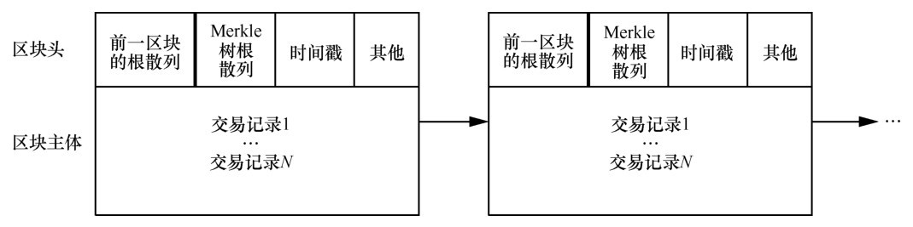
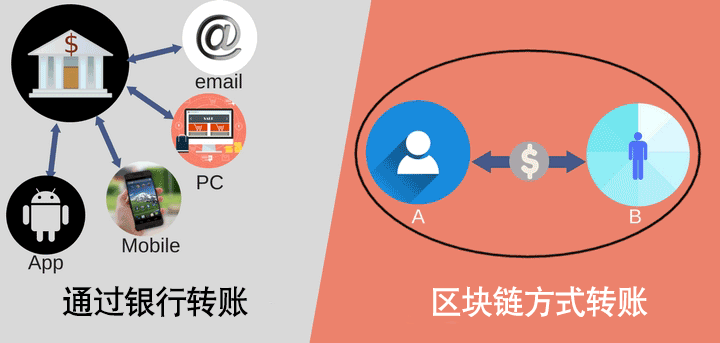
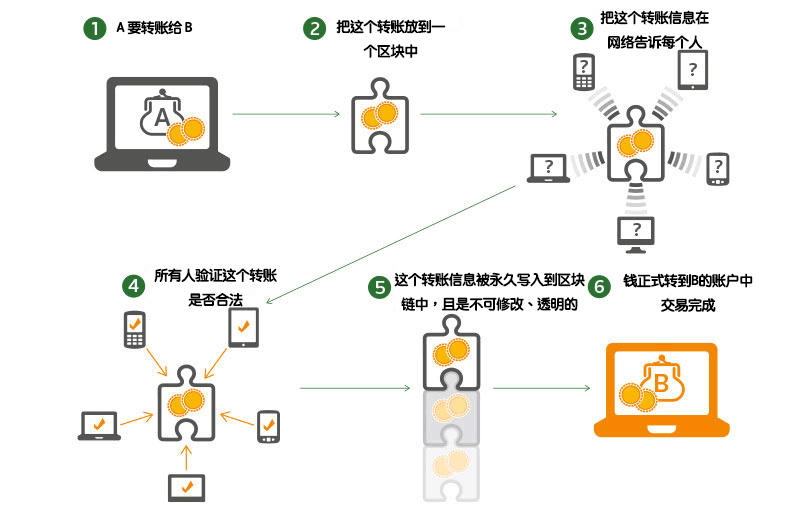

¿Qué es blockchain?
Literalmente:Blockchain es una cadena formada por pequeños bloques que registran diversos tipos de información, similar a apilar ladrillos uno tras otro. Una vez apilados, no se pueden desmontar. Cada ladrillo contiene además diversa información, como quién lo colocó, cuándo se colocó, qué material se usó, etc. Esta información tampoco se puede modificar.
Desde la perspectiva informática:Blockchain es un tipo de base de datos distribuida bastante especial. Una base de datos distribuida consiste en almacenar los datos e información de forma independiente en cada computadora, y la información almacenada es consistente. Si una o dos computadoras se dañan, la información no se pierde; aún puedes consultarla en otras computadoras.
Blockchain es distribuido, por lo que no tiene un punto central. La información se almacena en todos los nodos que se unen a la red blockchain, y los datos de los nodos están sincronizados. Un nodo puede ser un servidor, una computadora portátil, un teléfono móvil, etc.
Lo que debes saber es que los datos almacenados en estos nodos son exactamente iguales.
Características de blockchain
Descentralización:Debido a que es almacenamiento distribuido, no existe un punto central; también se puede decir que cada nodo es un punto central. En la vida cotidiana, esto significa que no se necesitan sistemas de terceros (los bancos, Alipay, las agencias inmobiliarias, etc., son terceros).
Apertura:Los datos del sistema blockchain son abiertos y transparentes; cualquiera puede participar. Por ejemplo, al alquilar una casa, puedes conocer el historial de alquiler anterior de esa casa y si ha tenido problemas. Por supuesto, cierta información privada personal está cifrada.
Autonomía:Blockchain adopta normas y protocolos basados en el consenso (por ejemplo, un algoritmo abierto y transparente), y cada nodo opera de acuerdo con esas normas. Así, todo se realiza mediante máquinas, sin componentes humanos. Esto transforma la confianza en las "personas" en confianza en las máquinas, y cualquier intervención humana no tiene efecto.
La información es inmutable:Si la información se almacena en blockchain, se conserva permanentemente y no hay forma de cambiarla. En cuanto al ataque del 51%, es prácticamente imposible de realizar.
Anonimato:En blockchain no hay información personal, porque todo está cifrado; son cadenas de caracteres compuestas por números y letras. Así no se produce el tráfico de tus datos de identidad, números de teléfono, etc.
Estructura de bloques
Un bloque contiene dos partes:
1. Encabezado del bloque (Head): registra la metainformación del bloque actual
2. Cuerpo del bloque (Body): datos reales
Los datos incluidos se muestran en la siguiente figura:

Cómo funciona blockchain
Tomemos como ejemplo una transferencia:
Actualmente nuestras transferencias están centralizadas; el banco es un libro de contabilidad centralizado. Por ejemplo, la cuenta A tiene 400 yuanes y la cuenta B tiene 100 yuanes.
Cuando A quiere transferir 100 yuanes a B, A debe enviar la solicitud de transferencia a través del banco. Después de que el banco verifica y aprueba, se deducen 100 yuanes de la cuenta A y se añaden 100 yuanes a la cuenta B.
Tras el cálculo, a la cuenta A, después de deducir 100, le queda un saldo de 300 yuanes; a la cuenta B, después de sumar 100, le queda un saldo de 200 yuanes.

Los pasos de la transferencia en blockchain son: A quiere transferir 100 yuanes a B, entonces A anuncia en la red la información de la transferencia. Todos revisan si la cuenta de A tiene fondos suficientes para completar la transferencia. Si la verificación es aprobada, todos registran esta información en la blockchain de sus propias computadoras, y la información registrada por cada persona está sincronizada y es consistente. Así, A transfiere exitosamente los 100 yuanes a la cuenta de B. Se puede ver que en todo este proceso el banco no interviene en absoluto.

Preguntas relacionadas
¿Relación entre blockchain y Bitcoin?
Bitcoin fue propuesto por Satoshi Nakamoto en 2009, y posteriormente, tomando como referencia la implementación de Bitcoin, se extrajo la tecnología blockchain.
Si Bitcoin son los fideos, entonces blockchain es la harina. Más tarde la gente descubrió que, además de fideos, con harina también se pueden hacer pan al vapor y bollos rellenos.
¿Por qué debería ayudarte a almacenar información de bloques?
Nadie se levanta temprano sin un beneficio. En pocas palabras: tú me ayudas a almacenar información y yo te doy la recompensa correspondiente.
¿Puntos técnicos clave que hay que entender sobre blockchain?
Garantizar que los datos no puedan ser alterados mediante Hash y cifrado asimétrico:
-
Hash: y = hash(x). Aplicar la operación hash a x para obtener y puede ocultar la información original x, porque no puedes calcular x a partir de y, logrando así el anonimato.
-
Cifrado asimétrico: la clave pública y la clave privada son un par. Si se cifran datos con la clave pública, solo se pueden descifrar con la clave privada correspondiente; si se cifran datos con la clave privada, solo se pueden descifrar con la clave pública correspondiente.
Algoritmo de consenso:Garantiza la consistencia de los datos entre nodos.
¿Hay alguna frase corta que pueda explicar blockchain claramente?
Sí.
El mahjong, como proyecto blockchain tradicional de China, tiene cuatro mineros por grupo. El minero que primero colisione y obtenga el valor hash correcto de 13 números puede obtener el derecho de contabilidad y recibir la recompensa.